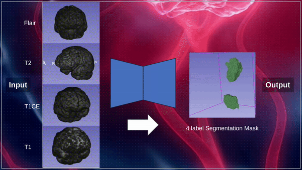
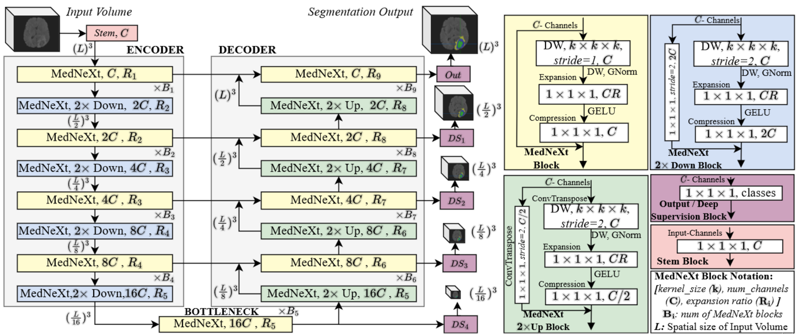
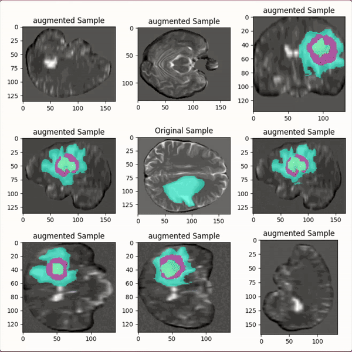
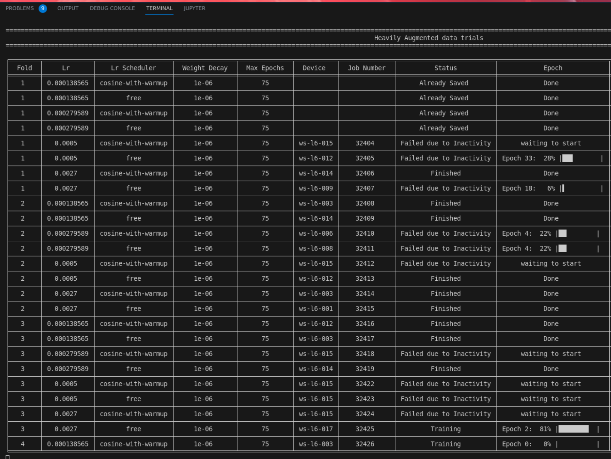
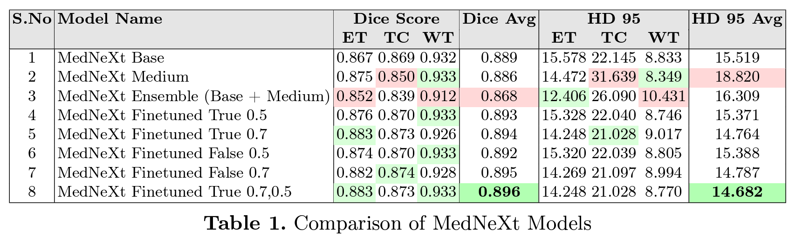
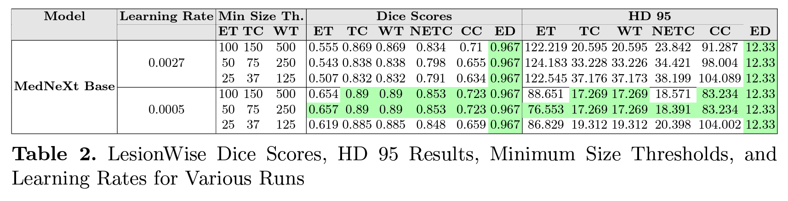
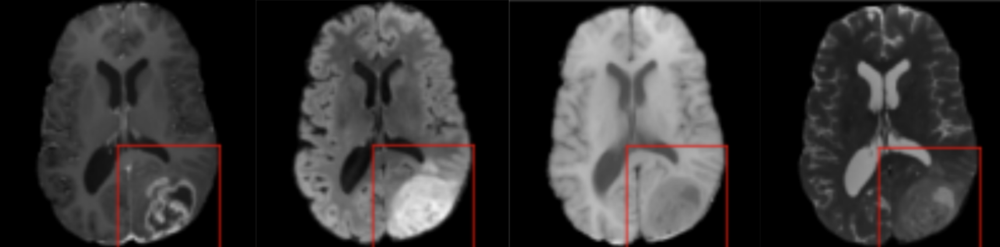
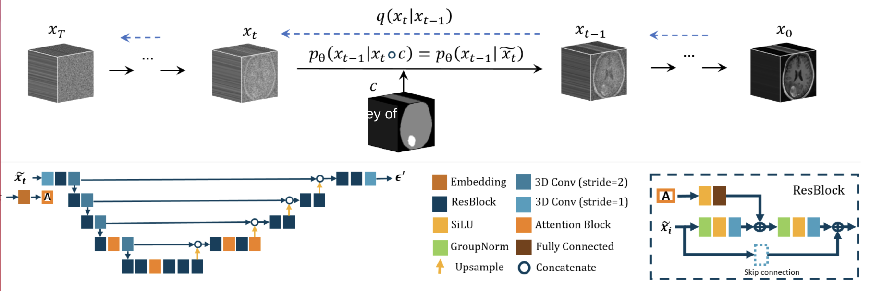
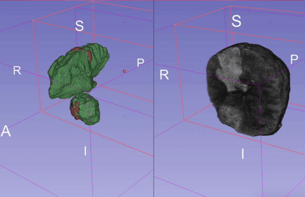

Overview
The Brain Tumor Segmentation (BraTS) 2024 Challenge focuses on advancing methods for segmenting gliomas in 3D multimodal brain MRI scans. Our team tackled two specific tasks: segmentation for sub-Saharan Africa populations and pediatric datasets, using the MedNeXt architecture.

Meet the Team
Contributors: Juan Guevara, Abdelrahman El Sayed, Mohammed Elseiagy, Alikhan Nurkamal, and Dinesh Saggurthi.
Guidance by: Sarim Hashmi, Fadillah Adamsyah Maani, Sanoojan Baliah, Dana Mohamed, and Prof. Mohammad Yaqub.
Methods
Our methodology centered around the innovative MedNeXt architecture, designed to harness the complementary strengths of convolutional neural networks (ConvNets) and transformers. This hybrid approach facilitated superior segmentation accuracy by leveraging both local feature extraction and global contextual understanding.
Key innovations included:
- Automated Preprocessing: Simplified data preparation with automated normalization and resizing tailored to each dataset.
- Dynamic Augmentations: Real-time application of augmentations such as rotations, flips, intensity scaling, and elastic transformations to improve model generalization.
- Fine-tuning Techniques: Carefully tuned hyperparameters to adapt the model to specific domain characteristics.

The training pipeline incorporated robust data augmentation strategies to address dataset variability and mitigate distribution shifts. The following illustrates the diverse augmentations applied during preprocessing:

To ensure an efficient workflow, we developed an automation script that streamlined preprocessing, model training, and inference tasks. This script significantly reduced manual effort and ensured consistency across experiments.

Results
Our comprehensive approach achieved outstanding results across both sub-Saharan Africa and pediatric brain tumor datasets. The following sections detail the quantitative and qualitative metrics of our models.
BraTS Africa Dataset
For the sub-Saharan Africa dataset, the MedNeXt architecture demonstrated exceptional segmentation performance, achieving high Dice scores and low HD95 values. The results are summarized in the following visual:

BraTS Pediatric Dataset
On the pediatric dataset, our model showed comparable segmentation accuracy with distinct challenges addressed through data-specific tuning. The performance metrics are visually presented below:

Data Visualization
The following image illustrates the cross-sectional views of the four MRI modalities provided for each brain scan: T1, T2, T1-contrast-enhanced, and FLAIR. These modalities were instrumental in capturing diverse tissue contrasts and abnormalities for robust segmentation.

Diffusion Model Architecture
The diffusion model architecture contributed significantly to refining segmentation predictions. By iteratively refining the outputs, the model improved delineation between tumor and non-tumor regions, resulting in enhanced accuracy.

A dynamic representation of the diffusion model’s performance across sample predictions is provided below:

Conclusion
The BraTS 2024 challenge provided a platform to address brain tumor segmentation challenges in diverse populations. Our MedNeXt-based approach achieved state-of-the-art performance metrics, with average Dice scores exceeding 0.89 for the SSA dataset and 0.83 for the pediatric dataset. Through rigorous fine-tuning, innovative preprocessing, and the integration of diffusion models, we demonstrated robust and reliable segmentation performance.
Our journey was marked by teamwork, late-night coding sessions, and the shared goal of contributing to medical imaging advancements.
Read more about our methods and results in our final paper: Optimizing Brain Tumor Segmentation with MedNeXt.